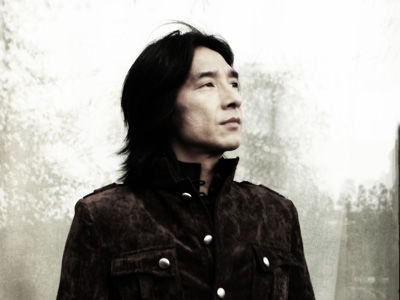
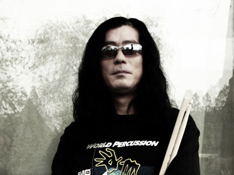

- 
-
丁武 唐朝乐队主唱
出生：12月30日
身高：184公分
体重：75kg
籍贯：江苏
星座：魔羯座1968年随父母赴东北，就读“五七”干校小学；1972年随父母回到北京，就读前门西打磨厂小学。1975年就读西城区28中学，1978年考入北京市工艺美术学校美术系，1982年毕业后在北京132中任职美术老师。1983年，辞去美术老师一职。1984年组织“不倒翁”乐队，其乐手为藏天朔、秦齐、李立、王迪。1985年 组织“黑豹”乐队，其乐手为王文杰、王文芳、李彤、郭传林。1986年黑豹解散，组织“唐朝”乐队，其乐手为张炬、KAISER、SARPO。1987年，北京首都体育馆参加90年现代音乐会演出。1989年鼓手赵年，吉他手刘义军加入唐朝乐队。
-
陈磊 唐朝乐队吉他手
出生：10月3日
身高：178公分
体重：60kg
籍贯：河北唐山
星座：天枰座陈磊从小就学过扬琴和小提琴，在哥哥的影响下12岁开始弹吉他。2000年，顾忠领着丁武去看了陈磊的一场演出，一首歌还没演完，唐朝的新吉他手就被确定了。虽然加入乐队时间较晚，但凭着他扎实的音乐功底和对音乐敏感的领悟能力，很快和乐队融合在一起。
值得一提的是，除了在唐朝司职吉他外，陈磊还组织了一个以吉他等器乐演奏为主的乐队。乐队先后参加了“吉他中国”大型演出、第4届“迷笛音乐节”的演出，为前Megadeth吉他手Marty的北京音乐会、以及世界吉他大师STVEN VAI北京演奏会担任嘉宾演出。。
-
顾忠 唐朝乐队贝司手
出生：7月7日
身高：182公分
体重：78kg
籍贯：山东青岛
星座：巨蟹座国内最著名的BASS手之一，1989年开始学习bass。1990年加入“时效“乐队。1991年加入“宝贝兄弟“乐队。1992年加入“燕山石化艺术团”。1993年加入“呼吸”乐队。1994年加入“惊蛰”乐队。1995年加入“唐朝”乐队至今。
1991年为常宽录制《从新计划现在》专辑。1992年为田震创作“谁为我停留”，并收录在其《野花》专辑中。1995年参加《干杯，朋友》的录制。1997年为姜昕录制两首单曲。1998年参加“唐朝”乐队第二张专辑“演义”的创作和录制。
- 
-
赵年 唐朝乐队鼓手
出生：2月11日
身高：182公分
体重：80kg
籍贯：山西
星座：水瓶座幼年就与鼓结下不解之缘，小学时曾将学校小乐队里的军鼓皮打漏。80年代与曹平、吴运涛组建DA DA DA乐队，89年加入唐朝乐队便一发不可收拾，跟丁武、张炬结识后一拍即合。自此至今的10几年时间里，乐队的几个人象结在了一棵树上的果实。
随着这些年经历的酸甜苦辣,相比十年前，对音乐的认识由感性转入理性，最后又回归到感性 。几年前与SABIAN、PREMIER公司合作，担任这些国际著名品牌的中国区形象代言人，希望能将唐朝的音乐，中国人的音乐带入国际市场。